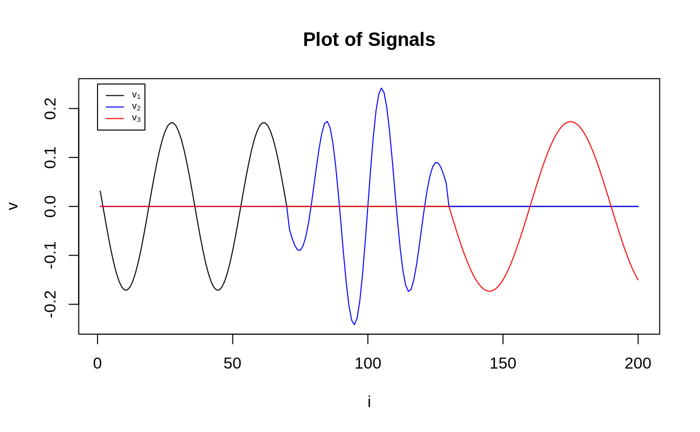
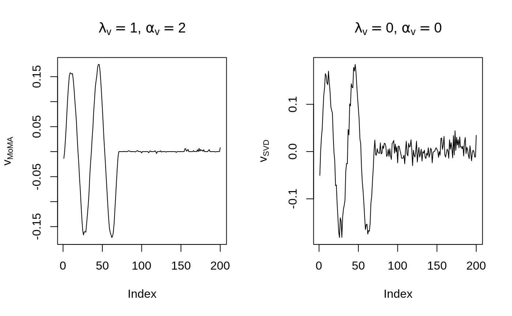
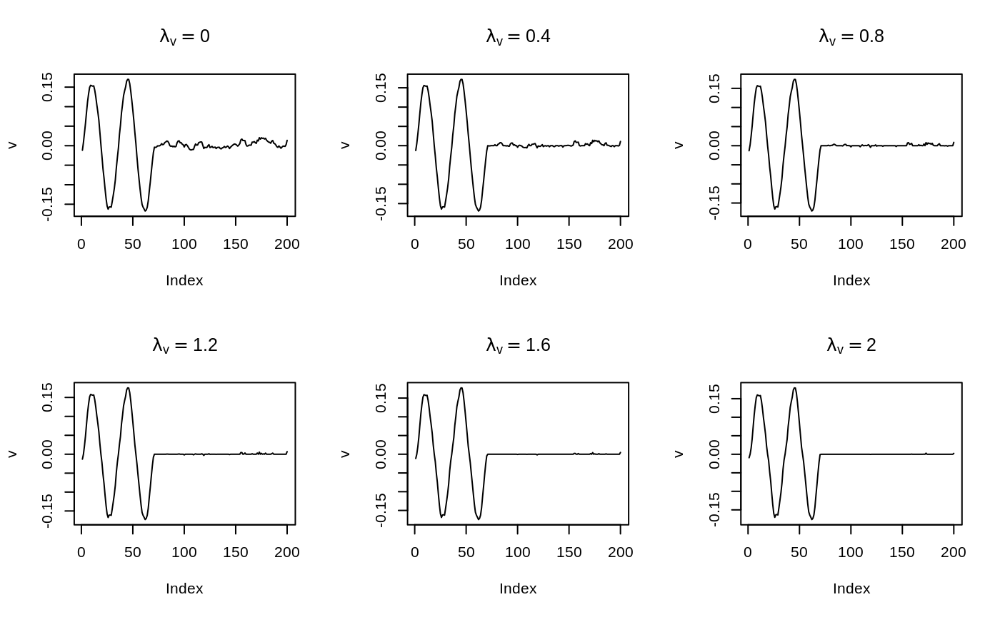
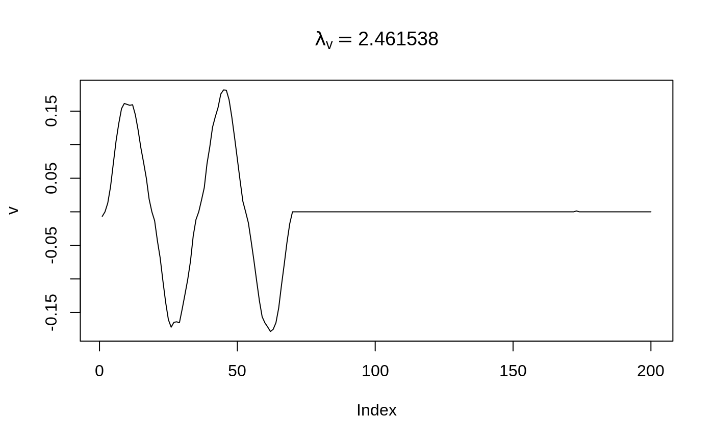

vignettes/moma-functional-data-analysis.Rmd
moma-functional-data-analysis.RmdThis section is based on the Simulation Study section in the paper Sparse and Functional Principal Component Analysis. Note this is not a complete replication of the Simulation Study section. Please refer to the paper for further details.
After introducing the simulated data set and the model, we give a quick demonstration of the moma_sfpca function. Then we showcase the parameter selection in MoMA.
We simulate data according to the low-rank model \[X = \sum_{k=1}^{K} d_{k} \boldsymbol{u}_{k} \boldsymbol{v}_{k}^{T}+{E}, \]
where \(E_{i j} \stackrel{\mathrm{IID}}{\sim} \mathcal{N}(0,1)\), \(K = 3\), \(p = 2\), \(d_1 = n / 4, d_{2}=n / 5, d_{3}=n / 6\). Left singular vectors \(u_1,u_2, u_3\) are sampled uniformly from the space of orthogonal matrices. The signal in the right singular vectors \(v_1,v_2,v_3\), each of which have a combination of sparsity and smoothness, takes the form of a sinusoidal pulse.
get.X <- function() {
n <- 199
p <- 200
K <- 3
snr <- 1
## Step 1: sample U, an orthogonal matrix
rand_semdef_sym_mat <- crossprod(matrix(runif(n * n), n, n))
rand_ortho_mat <- eigen(rand_semdef_sym_mat)$vector[, 1:K]
u_1 <- rand_ortho_mat[, 1]
u_2 <- rand_ortho_mat[, 2]
u_3 <- rand_ortho_mat[, 3]
## Step 2: generate V, the signal
set_zero_n_scale <- function(x, index_set) {
x[index_set] <- 0
x <- x / sqrt(sum(x^2))
x
}
b_1 <- 7 / 20 * p
b_2 <- 13 / 20 * p
x <- as.vector(seq(p))
# Sinusoidal signal
v_1 <- sin((x + 15) * pi / 17)
v_1 <- set_zero_n_scale(v_1, b_1:p)
# Gaussian-modulated sinusoidal signal
v_2 <- exp(-(x - 100)^2 / 650) * sin((x - 100) * 2 * pi / 21)
v_2 <- set_zero_n_scale(v_2, c(1:b_1, b_2:p))
# Sinusoidal signal
v_3 <- sin((x - 40) * pi / 30)
v_3 <- set_zero_n_scale(v_3, 1:b_2)
## Step 3, the noise
eps <- matrix(rnorm(n * p), n, p)
## Step 4, put the pieces together
X <- n / 3 * u_1 %*% t(v_1) +
n / 5 * u_2 %*% t(v_2) +
n / 6 * u_3 %*% t(v_3) +
eps
# Print the noise-to-signal ratio
cat(paste("norm(X) / norm(noise) = ", norm(X) / norm(eps)))
# Plot the signals
yrange <- max(c(v_1, v_2, v_3))
plot(v_1,
type = "l",
ylim = c(-yrange, yrange),
ylab = "v", xlab = "i",
main = "Plot of Signals"
)
lines(v_2, col = "blue")
lines(v_3, col = "red")
legend(0, 0.25,
legend = expression(v[1], v[2], v[3]),
lty = 1,
col = c("black", "blue", "red"),
cex = 0.6
)
return(X)
}Now we obtain the data.
## norm(X) / norm(noise) = 1.26480989172193
Recall the SFPCA framework:
\[\max_{u,\,,v}{u}^{T} {X} {v}-\lambda_{{u}} P_{{u}}({u})-\lambda_{{v}} P_{{v}}({v})\] \[\text{s.t. } \| u \| _ {S_u} \leq 1, \, \| v \| _ {S_v} \leq 1.\] Typically, we take \({S}_{{u}}={I}+\alpha_{{u}} {\Omega}_{{u}}\) where \(\Omega_u\) is the second- or fourth-difference matrix, so that the \(\|u \|_{S_u}\) penalty term encourages smoothness in the estimated singular vectors. \(P_u\) and \(P_v\) are sparsity inducing penalties.
Here we impose no penalty on the u side, and set \(\Omega_v\) to be the second-difference matric, \(P_u(x) = \|x\|_1\), i.e., the LASSO.
Before we delve into various modeling choices provided by MoMA, we give a one-line solution to the above problem. Suppose we are interested in what the solution looks like when \(\alpha_v = 2, \lambda_v = 1\). We run the following code to compare the model and its unpenalized version (simple SVD).
library(MoMA)
Omega_v <- second_diff_mat(200)
res <- moma_sfpca(X,
center = FALSE,
v_sparse = moma_lasso(lambda = 1),
v_smooth = moma_smoothness(Omega_v, alpha = 2)
)
## access results by `get_mat_by_index`
v_moma <- res$get_mat_by_index()$V
v_svd <- svd(X)$v[, 1]
## make a plot
par(mfrow = c(1, 2))
plot(v_moma,
type = "l",
ylab = expression(v[MoMA]),
main = expression(paste(lambda[v] == 1, ", ", alpha[v] == 2))
)
plot(v_svd,
type = "l",
ylab = expression(v[SVD]),
main = expression(paste(lambda[v] == 0, ", ", alpha[v] == 0))
)
MoMA attains almost perfect recovery on this data set!
Tuning parameters are of concern in the model. Currently we provide two parameter selection methods: grid search and nested BIC selection.
Calculate every solution for the grid of parameters specified. In the example below, \(\lambda_v\) ranges in seq(0,2,length.out = 6), and \(\alpha_v\) is fixed to 2. Then we make a plot to observe how \(\lambda_v\) affects the recovered signal.
res <- moma_sfpca(X,
center = FALSE,
v_sparse = moma_lasso(lambda = seq(0, 2, length.out = 6)),
v_smooth = moma_smoothness(Omega_v, alpha = 2)
)
par(mfrow = c(2, 3))
for (i in 1:6) {
res_i <- res$get_mat_by_index(lambda_v = i)
plot(res_i$V,
main = bquote(lambda[v] == .(res_i$chosen_lambda_v)),
ylab = "v",
type = "l"
)
}
Those bumps get eliminated as \(\lambda_v\) increases. An easier way to visualize that is to start a Shiny App:
We can run a greedy selection procedure to pick the best parameter based on BIC. Please see ?select_scheme for details.
Note the selection procedure is pretty fast, we can select \(\lambda_v\) out of a much finer grid (seq(0,3,length.out = 40)).
## Run the algorithm and get the result by `get_mat_by_index`
res <- moma_sfpca(
X,
center = FALSE,
v_sparse = moma_lasso(
lambda = seq(0, 3, length.out = 40),
select_scheme = "b"
),
v_smooth = moma_smoothness(Omega_v, alpha = 2)
)$get_mat_by_index()## Start a final run on the chosen parameters.[av, au, lu, lv] = [2, 0, 0, 2.46154]
The selection procudure agrees the bumps located on [70,200] should be eliminated.
To recover the other two signals, set rank = 3.
res <- moma_sfpca(
X,
center = FALSE,
v_sparse = moma_lasso(
lambda = seq(0, 3, length.out = 40),
select_scheme = "b"
),
v_smooth = moma_smoothness(Omega_v, alpha = 2),
rank = 3
)To experiment with different deflation schemes to achieve a certain type of orthogonality, specify the deflation_scheme argument.
# Note `deflation_scheme` should be one of
# "PCA_Hotelling", "PCA_Schur_Complement", "PCA_Projection"
res <- moma_sfpca(
X,
center = FALSE,
v_sparse = moma_lasso(
lambda = seq(0, 3, length.out = 40),
select_scheme = "b"
),
v_smooth = moma_smoothness(Omega_v, alpha = 2),
rank = 3,
deflation_scheme = "PCA_Schur_Complement"
)